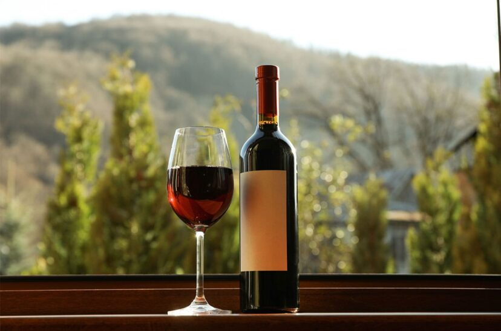

VINO TINTO
Para realzar la experiencia del asado, te recomendamos un vino tinto robusto, como un Malbec o un Cabernet Sauvignon. La riqueza y los taninos de estos vinos complementan la intensidad de las carnes, creando un equilibrio perfecto que resalta cada bocado. Disfruta de un vaso de vino tinto que se desliza suavemente, combinando su sabor con la jugosidad de la carne asada.
CERVEZA
Para aquellos que prefieren un maridaje más audaz, una cerveza artesanal es la opción perfecta. Una lager refrescante o una pale ale con un toque de amargor resaltan los sabores ahumados de la carne. Cada sorbo de cerveza añade una dimensión extra a tu comida, haciendo que el asado sea aún más disfrutable.
COCA COLA

Si buscas una opción más refrescante, nuestra Coca-Cola bien fría es la elección ideal. La dulzura burbujeante de la bebida equilibra la riqueza del asado, limpiando tu paladar y permitiendo que cada bocado brille con su propio sabor. Una Coca-Cola es el acompañamiento clásico que transforma tu experiencia de asado en un festín inolvidable.